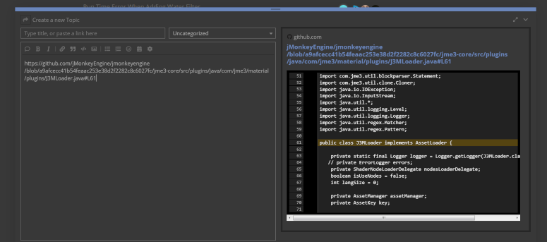
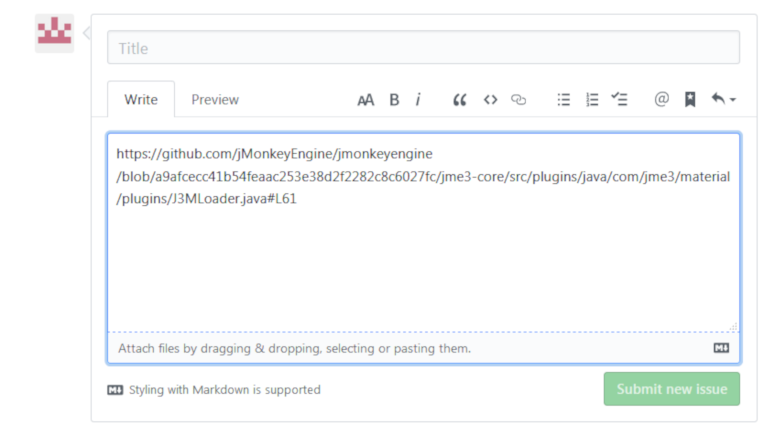

Github Tips
Inserting code links into forum posts
There will come a time when you may wish to insert links from github into your forum posts to highlight problems in code, clarify some point your making, or provide more background. Whatever the reasons, here are a few pointers that will help make your posts more robust.
Creating permanent links
To create a link to a specific line in a file located on github all you need to do is click the line number inside the file. A three dot tag will appear and the line will be highlighted in yellow.
This will append the line number to the URL in your address bar with the format #L<number>, in our case #L61.
https://github.com/jMonkeyEngine/jmonkeyengine/blob/master/jme3-core/src/plugins/java/com/jme3/material/plugins/J3MLoader.java#L61Click the three dot tag and a option menu will appear.
Select the Copy permalink option and now you can paste the URL into any forum post or wiki issue and the code display window will show your selection like so:

The same thing applies to github.

If you want to select more than one line:
-
Select the start line number.
-
Hold down the Shift key.
-
Select the ending line number.
All the lines between will be highlighted as well. This will change the URL using the format #L<number>-L<number>, in our case #L83-L86.
https://github.com/jMonkeyEngine/jmonkeyengine/blob/master/jme3-core/src/plugins/java/com/jme3/material/plugins/J3MLoader.java#L83-L86The above mentioned links are just normal URLs. This means that this line will be linked forever at this point in this file as long as it exists. What if the line changes or what you were referring to goes away or moves to another line? Canonical URLs to the rescue!
Canonical URLs
A Canonical URL will attach the SHA hash number of the commit to the URL so even if the file changes, that link will always point to the same file and same line.
https://github.com/jMonkeyEngine/jmonkeyengine/blob/master/jme3-core/src/plugins/java/com/jme3/material/plugins/J3MLoader.java#L83-L86https://github.com/jMonkeyEngine/jmonkeyengine/blob/a9afcecc41b54feaac253e38d2f2282c8c6027fc/jme3-core/src/plugins/java/com/jme3/material/plugins/J3MLoader.java#L83-L86Notice the hash commit number is now part of the URL.
To make the Canonical URL just select the y hot key after selecting the line number or numbers. Once you have done this, all links from thereafter will be Canonical URLs.
Suggested reading: